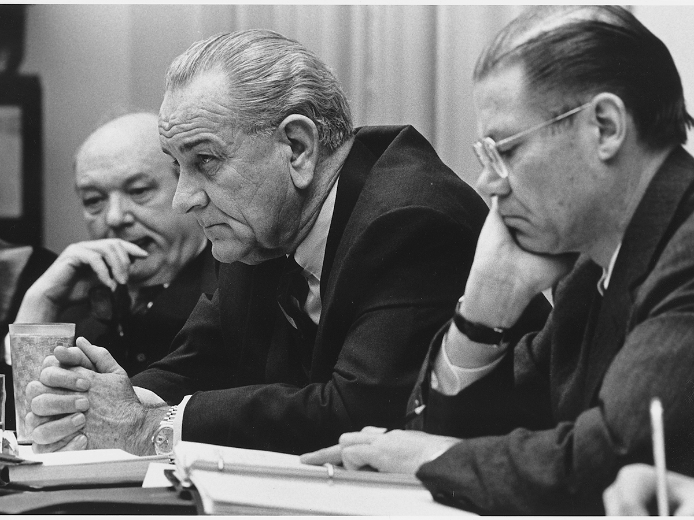

The Constitution makes the president commander in chief of the nation’s armed forces. The president isn't a member of the US military. They're the only person authorized for the release and use of nuclear weapons. This role gives presidents the ability to back up their foreign policy decisions with force, if necessary. The president is in charge of the Army, Navy, Air Force, Marines, and Coast Guard. The top commanders of all these branches of service are subordinate to the president. However, the US military can’t be made to carry out an illegal or immoral order. The idea of a president ordering the launch of nuclear weapons for some random reason is impossible. The Twenty-Fifth amendment was drafted to ensure that a civilian would continuously occupy the presidency.
Why were the Founding Fathers so worried about making sure a civilian was in charge of the military?
Like many educated people of the time period, the Founding Fathers were educated on the history of ancient Rome. One of the problems that brought about the end of the Roman Republic was that armies eventually became more loyal to their commanders than to the nation itself. This led to the belief that the president as commander in chief of the military shouldn’t be a military person themselves.
There’s also the common-sense argument that since the president is elected, term-limited control of the military and military policy would ultimately be up to the voters rather than an unelected military leader.
The president has the power to send military forces overseas for hostilities without Congressional approval. This power is put in place for the military to be effective. If the nation had to wait for an act of Congress to engage in fighting, the wait may put the military at a disadvantage and thus the nation in harm’s way. Congress, however, must approve any deployments of more than 60 days according to the War Powers Act.